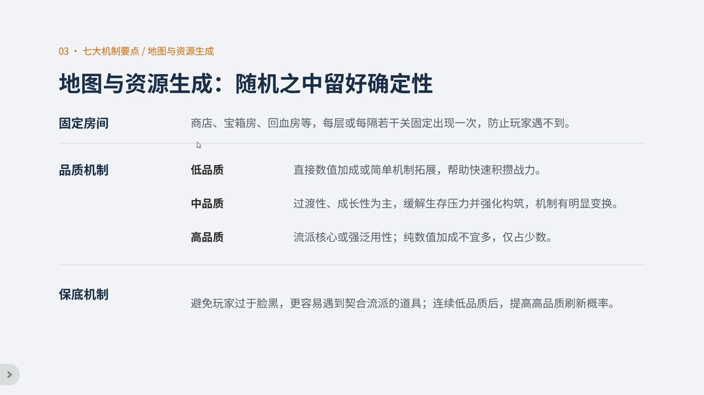

地图与资源生成：随机里留确定性
第 2 章讲的是“怎么生成一张地图”，这一章讲的是“生成出来之后，里面放什么”。两者经常被混为一谈，但它们解决的是不同的问题：地图解决路径，掉落解决构筑。玩家抱怨“这局没法玩”，八成是后者——地图再漂亮，拿不到能用的东西也白搭。
本章的核心命题是一句话：随机里必须留确定性。玩家需要知道，无论运气多差，某些东西一定会出现。
7.1 固定房间：给运气差的人一条活路
固定房间指的是位置可以随机，但一定存在的功能性房间。视频里的例子很具体：
- 《以撒》：每层一个商店、一个道具房，保证玩家有地方花钱、有机会拿到成长道具。
- 《杀戮尖塔》：Boss 房之前必定有一个篝火，玩家能在这里回血、升级卡牌。
这类房间可以多刷，但必须有保底。视频里讲者的表述很到位：某个房间可以“一条路上刷好几个”，但你也要设计一个必定出现的版本——否则“我一整张图一个火堆都没刷出来，就很绝望了”。
固定房间的配置原则
- 必出项：Boss 房、Boss 前休整点、单层至少 1 个成长来源。
- 间隔出：商店每 2 层必有时机，道具房每层 1 个，隐藏房按 40%–60% 概率。
- 可溢出：在保底之外，允许额外随机生成，让运气好的局更富。
三类的关系是：必出保证下限，间隔出保证节奏，可溢出负责上限。只做必出会太平，只做随机会劝退。

7.2 品质分层：三档各干什么活
道具不能只是“数值大小不同”，那样玩家只会挑数值最高的。品质分层的意义是让每一档承担不同的构筑职能：
| 档位 | 设计定位 | 典型效果 | 出现阶段 |
|---|---|---|---|
| 低品质 | 帮玩家度过前期，简单直接 | 直接数值加成，或非常简单的机制奖励（+1 弹药、+10% 移速） | 全流程大量出现 |
| 中品质 | 过渡性与成长性，缓解生存压力，强化核心机制 | 有明确的机制差异，但不极端（穿透、溅射、回能） | 全流程中等频率 |
| 高品质 | 流派核心，作为输出终端或防御终端 | 强力机制、强泛用性，能改变打法 | 稀有，集中在中后期 |
视频里有一个很实用的量化建议：如果做了 20 件高品质道具，纯数值加成的应该只占两三件。因为高品质的职责是“改变打法”，而不是“把数字调大”。纯数值的高品质道具会挤掉机制类的位置，让后期构筑趋同。
7.3 概率与软保底
起手概率可以很朴素。视频里给了一组示例：低品质 80%、中品质 18%、高品质 2%。这组数字本身不重要，重要的是它后面那句“举例说明”——真正要设计的是概率怎么随过程变化。
他给的软保底方案是：玩家抽到一次低品质之后，低品质的刷新概率 −2%，高品质 +2%。这个机制的效果是：脸黑的玩家会越抽越容易出好东西，而运气好的玩家仍然靠基础概率。它不会让玩家算出“第 N 次必出”，但显著削掉了“连续十几次全垃圾”的长尾。
| 连续未出高品质次数 | 高品质实际概率 | 累计出货概率 |
|---|---|---|
| 0 | 2% | 2% |
| 1 | 4% | 5.9% |
| 2 | 6% | 11.6% |
| 3 | 8% | 18.7% |
| 5 | 12% | 35.8% |
| 8 | 15%（封顶） | — |
注意表格最后一行：软保底必须有上限。如果不封顶，连续 20 次不出高品质，概率会涨到 42%，等于强制奖励。封顶值建议设在基础概率的 5–8 倍。
另一种更可控的写法
线性增长之外，还有两种常见做法，适用场景不同：
- 计数保底：连续 N 次未出高品质，则第 N+1 次强制提升到 30%。可控性最强，玩家社区也最容易验证，缺点是节奏感太“机械”。
- 分段权重：把 pity 计数分成三段，每段用不同权重表。适合想让“保底”看起来不那么明显项目。
7.4 流派亲和：让玩家更容易凑齐，但不能“必给”
视频里提到另一种保底思路：玩家玩的是火系法师，那就提高火系道具的掉落权重，减少水电这类用不上的东西。这条机制在实践里非常有效，但有两个必须防的副作用。
品质 × 池子"] --> B["软保底
按 pity 计数调整品质概率"] B --> C["流派亲和
按当前 build 的 tag 加权"] C --> D["最终抽取"] D --> E["更新 pity 计数
更新 build tag"] E --> B style C fill:#fff6e8,stroke:#e65100,color:#14395a style D fill:#e9f7ec,stroke:#2e7d32,color:#14395a
副作用一：必给。如果契合道具的权重乘到 5 倍，玩家会迅速发现“我玩火，火道具必出”，构筑失去惊喜。乘数控制在 1.5–2.0 之间，并保留至少 20% 的权重给“非契合但可转化”的道具。
副作用二：锁死。玩家的 build tag 一旦确定，系统就只给他这一路的东西，导致他想转型也转不了。解法是让 tag 有衰减：最近 3 件道具决定主 tag，超过 5 件不相关的道具则 tag 重置。这样玩家可以主动“洗点”，系统也允许他中途换路。
7.5 实现：一个可用的掉落抽取器
using System;
using System.Collections.Generic;
using System.Linq;
public enum Tier { Low, Mid, High }
public class ItemDef
{
public string Id;
public Tier Tier;
public List<string> Tags = new(); // "fire" / "crit" / "summon"
public bool PureNumeric; // 纯数值道具，高品质里要限量
}
public class LootConfig
{
public float LowBase = 0.80f;
public float MidBase = 0.18f;
public float HighBase = 0.02f;
public float PityStep = 0.02f; // 每次未出高品质，Base 转移 2%
public float HighPityCap = 0.15f; // 高品质概率上限
public float AffinityMul = 1.6f; // 契合流派权重倍数
public float OffAffinityKeep = 0.25f;// 非契合道具保留的权重比例
}
public class LootRoller
{
private readonly LootConfig _cfg;
private readonly List<ItemDef> _pool;
private readonly Random _rng;
private int _sinceHigh = 0; // 距离上次高品质的抽取次数
public LootRoller(LootConfig cfg, List<ItemDef> pool, Random rng)
{ _cfg = cfg; _pool = pool; _rng = rng; }
public ItemDef Roll(IReadOnlyList<string> buildTags)
{
// 1) 品质概率：基础值 + 软保底，注意封顶后再归一化
float pLow = Math.Max(0.05f, _cfg.LowBase - _sinceHigh * _cfg.PityStep);
float pHigh = Math.Min(_cfg.HighPityCap, _cfg.HighBase + _sinceHigh * _cfg.PityStep);
float pMid = Math.Max(0f, 1f - pLow - pHigh);
Tier tier = PickTier(pLow, pMid, pHigh);
// 2) 档内抽取：先过滤池子，再按亲和加权
var candidates = _pool.Where(i => i.Tier == tier).ToList();
if (candidates.Count == 0)
candidates = _pool.ToList(); // 池子配置缺失时的兜底
var weighted = candidates.Select(item =>
{
bool affinity = buildTags.Any(t => item.Tags.Contains(t));
float w = affinity ? _cfg.AffinityMul : _cfg.OffAffinityKeep;
if (item.PureNumeric && tier == Tier.High) w *= 0.5f; // 抑制高品质纯数值
return (item, w);
}).ToList();
var picked = WeightedPicker.Pick(weighted, _rng);
// 3) 更新保底计数
_sinceHigh = tier == Tier.High ? 0 : _sinceHigh + 1;
return picked;
}
private Tier PickTier(float pLow, float pMid, float pHigh)
{
double roll = _rng.NextDouble();
if (roll < pHigh) return Tier.High;
if (roll < pHigh + pMid) return Tier.Mid;
return Tier.Low;
}
}
- 归一化：软保底会把三档概率加成一个小于 1 的数，也可能超过 1，所以用
pMid = 1 - pLow - pHigh反推，而不是独立配置三个概率。这样无论怎么调都不会出现概率空洞。 - 先选品质再选道具：不要把所有道具放进一个大池子按权重抽。分成两步之后，品质概率与道具内容互不干扰，策划改品质不牵动内容权重。
- 纯数值加权抑制：高品质里的纯数值道具权重乘 0.5，这是用代码落实“高品质以机制为主”的设计意图。
7.6 四个坑
池污染
每个版本往里加道具，特定流派的达成率持续下降。解法：按流派分池，各池独立配权重；新道具先投放到“通用池”，再逐步下沉到专精池。
保底被玩家利用
如果软保底是可预测的（比如固定第 8 次必出），玩家会故意在前 7 次用低价值抽卡“垫刀”。解法：保底只在自然掉落里累计，商店购买、事件奖励独立计算，或者让计数带随机抖动。
品质通胀
为了让玩家爽，把高品质概率调到 10%，结果是每局都能拿到两三件核心道具，构筑变得理所当然。高品质应该始终稀有，爽感来自“凑齐”，不是“每层都有”。
实现练习 7-1
用上面的 LootRoller 跑 10000 次模拟，统计三档的实际出现率、平均出货间隔、以及“连续 10 次未出高品质”的比例。把 pity 参数改成 0 再跑一次，比较两个结果的差距。
判断练习 7-2
假如玩家玩的是“召唤流”，但系统只给他召唤类道具，他还能转型吗？设计一套 tag 衰减规则，让玩家在 5 次抽取内可以主动改变方向。
实现练习 7-3
把高品质道具全部列出来，标注“机制改变”或“纯数值”。如果纯数值超过 20%，改写其中两件，让它们至少影响一个战斗维度而不只是加数字。
本章小结
- 固定房间负责下限，间隔出负责节奏，可溢出负责上限。
- 低/中/高三个品质档位分别承担“过渡”“成长”“流派核心”的职责。
- 高品质以机制为主，纯数值的应控制在 20% 以内。
- 软保底要封顶，并且不要做成可预测的固定次数。
- 流派亲和权重控制在 1.5–2.0 倍，保留非契合池，tag 要能衰减。